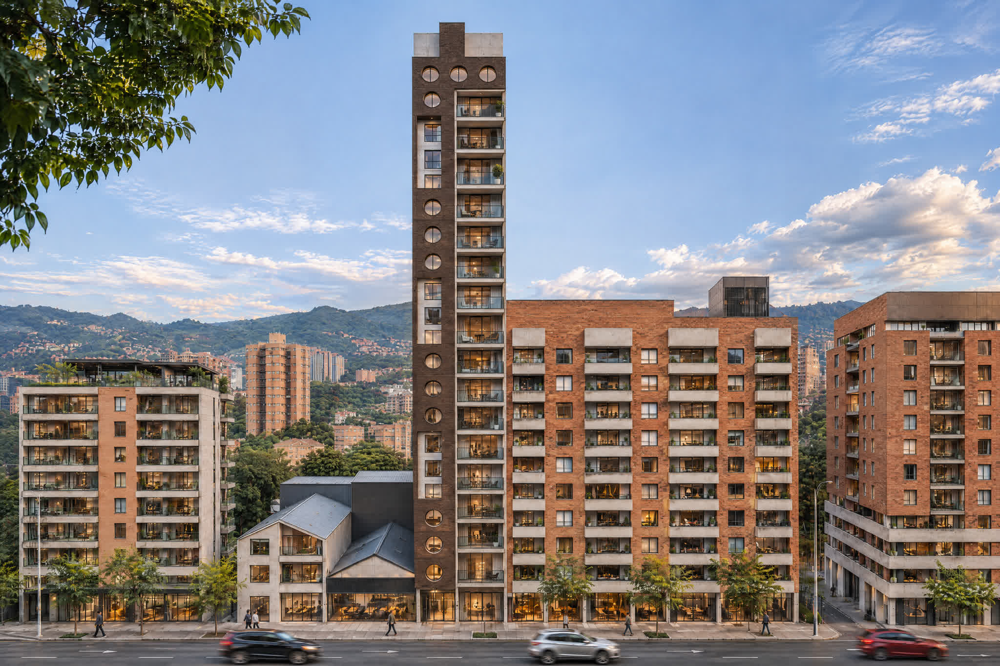

APARK � EXPERIENCIA ARQUITECTONICA
ARQUITECTURA PARA EXPLORAR
Una nueva
perspectiva.
Descubre el proyecto desde afuera.
Imagina la vida en cada nivel.
FACHADA � NIVEL 11

ARQUITECTURA PARA EXPLORAR
Descubre el proyecto desde afuera.
Imagina la vida en cada nivel.